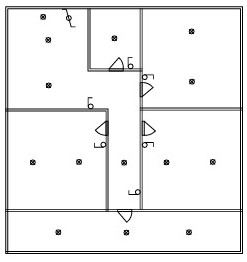

Habilidades Eléctricas Aplicadas
Mi formación como Técnico en Electrónica y estudiante de Ingeniería Civil Electrónica en la PUCV me otorga un dominio avanzado sobre sistemas de baja tensión, interpretación de esquemas analíticos y distribución de potencia. Esta base me permite diseñar soluciones seguras, eficientes y normalizadas tanto en hardware industrial como en redes de distribución interna.
Ejes de Experiencia y Proyectos
Singular Electric
Diseño e implementación de instalaciones eléctricas residenciales y comerciales. Levantamiento de requerimientos en terreno, cálculo de protecciones térmicas y differentials, dimensionamiento de alimentadores y ejecución de tableros de distribución general respetando estándares técnicos y de seguridad.
Iluminando Chile
Participación activa en el voluntariado de la PUCV enfocado en la regularización y mejora de redes eléctricas domésticas en sectores vulnerables. Diagnóstico de instalaciones deficientes, reestructuración de circuitos críticos, montaje de canalizaciones y concientización sobre el uso seguro de la energía para prevenir riesgos de siniestros.
Diseño de Circuitos y Planos Técnicos
Dominio de herramientas de software CAD (como AutoCAD) para la confección de planos eléctricos comerciales y residenciales. Capacidad de estructurar diagramas unilineales, cuadros de carga detallados y plantas de alumbrado/fuerza listos para procesos de tramitación y ejecución en obra.
Competencias Clave en Proyectos:
- Cálculo preciso de curvas de disparo para disyuntores magnetotérmicos.
- Coordinación de protecciones para evitar fallas en cascada.
- Diseño de mallas de puesta a tierra y medición de resistividad de terreno.
- Estructuración de canalizaciones EMT, PVC y bandejas porta conductores.
